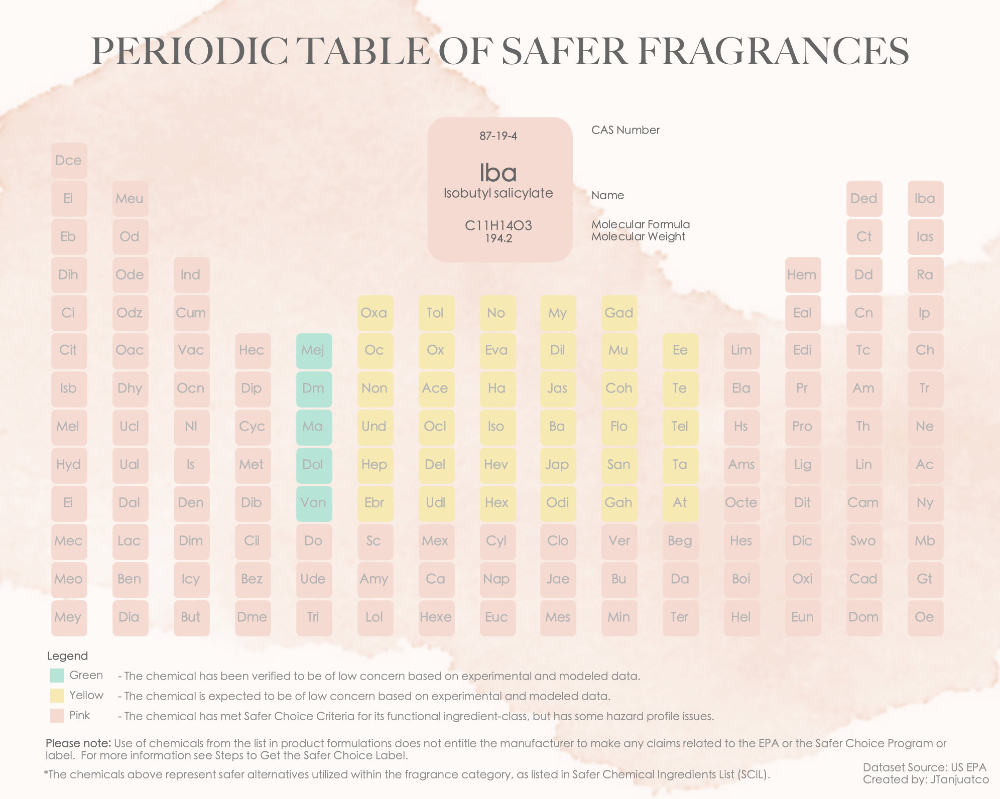

May 6, 2024
Hello! I'm thrilled to present my latest data analysis project, where I employed Excel, SQL, and Tableau to clean, explore, and visualize the Safer Chemical Ingredients List from the US EPA. This project holds special significance for me as it merges my expertise in chemistry with my passion for data analysis. My inspiration for this project stemmed from Flavio Matios' visualization. With my Periodic Table of Safer Fragrances, I aimed to simplify the Safer Chemical Ingredients List, making it accessible to everyone, including non-technical individuals. I hope this approach makes learning more fun and fosters better understanding.


In this project, I conducted data cleaning and exploratory analysis to reveal insights within the layoffs dataset. Leveraging advanced SQL techniques, I filtered the data to gain a deeper understanding of global layoffs. Additionally, I created a Tableau dashboard to visually represent my analysis.
Using the computer survey dataset sourced from Kaggle, I utilized data manipulation queries to transform the data for easier interpretation and analysis. This project honed my proficiency in SQL and deepening my understanding of data manipulation techniques.

Using the dataset from Github, I created an interactive dashboard displaying key metrics such as the average salary and happiness ratings of data professionals, with a focus on salary satisfaction and work-life balance. Utilizing Power Query within Power BI, I meticulously cleaned and transformed the raw data, ensuring its suitability for analysis and visualization.
Clean and standardized data is significant in data analysis. This project focuses on cleaning and preparing the Studio Ghibli dataset using SQL. As an anime fan and enthusiast of Studio Ghibli's iconic films, I embarked on this project to explore the dataset, address inconsistencies, and ensure data quality for further analysis and visualization.

This project is an interactive dashboard built in Excel enabling users to access comprehensive insights into total revenue, transactions, and top products across 3 stores. I also found interesting patterns that could reduce operating costs and maximize profit.

I'm thrilled to share my first SQL project, where I performed series of queries, employing aggregate and filtering functions to unveil valuable insights. My primary focus revolved around extracting crucial metrics, particularly the total revenue and sales volume, segmented by product category, promotional and regular items, and gender. This project served as an invaluable learning experience, providing me with a solid foundation in SQL querying and data analysis as a whole.